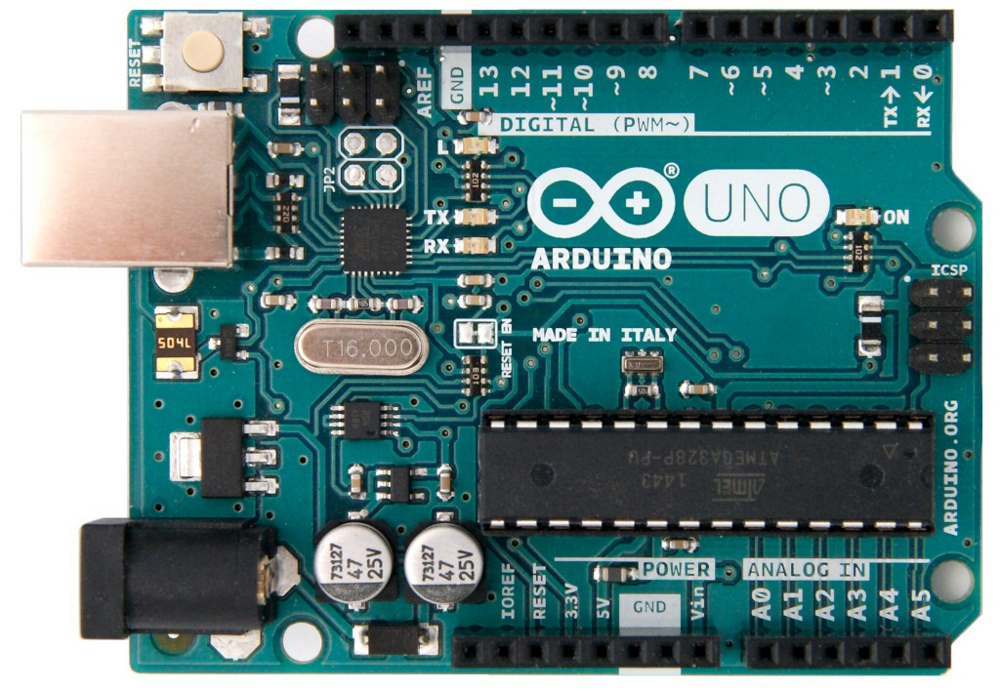
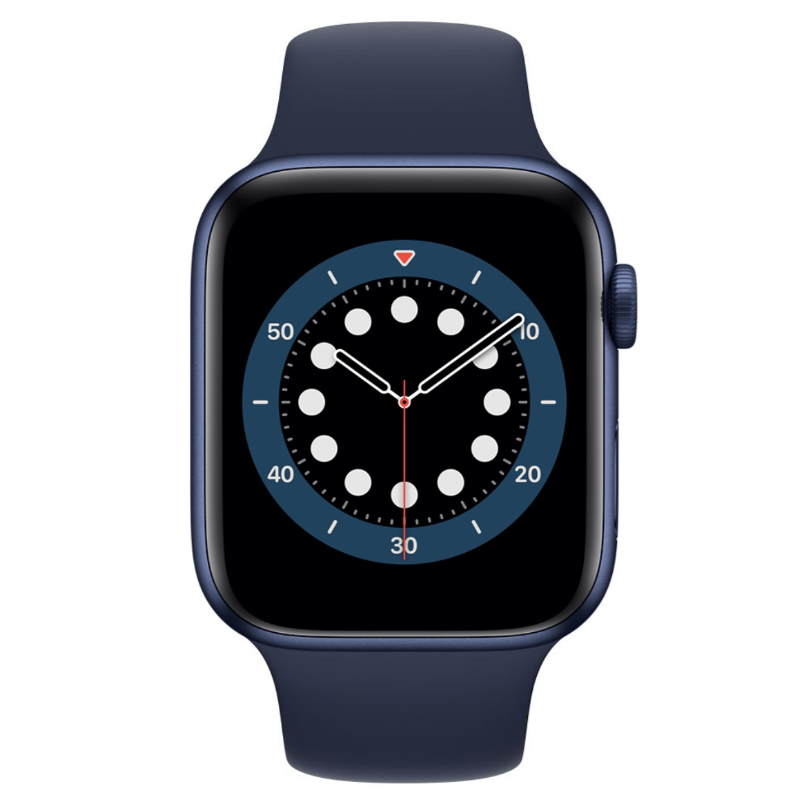
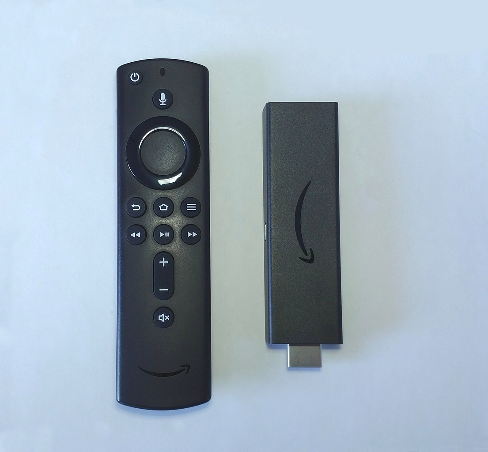
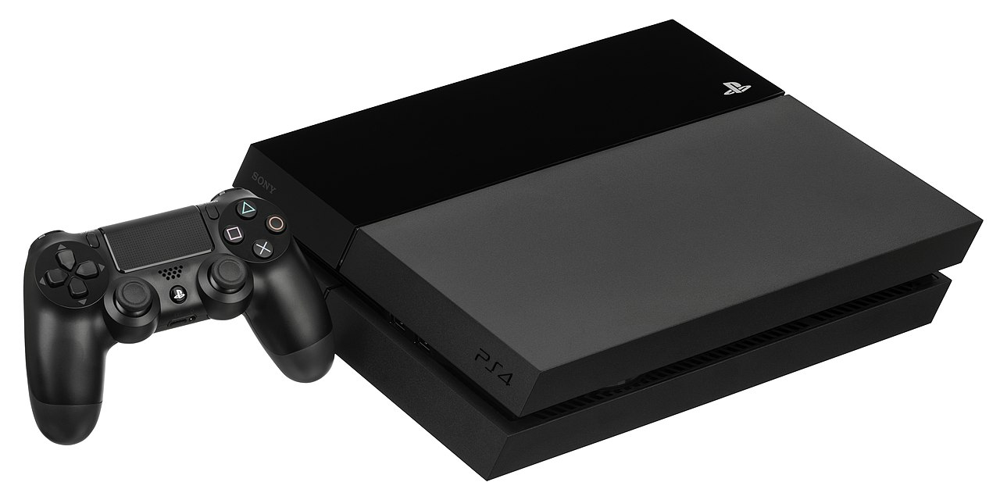
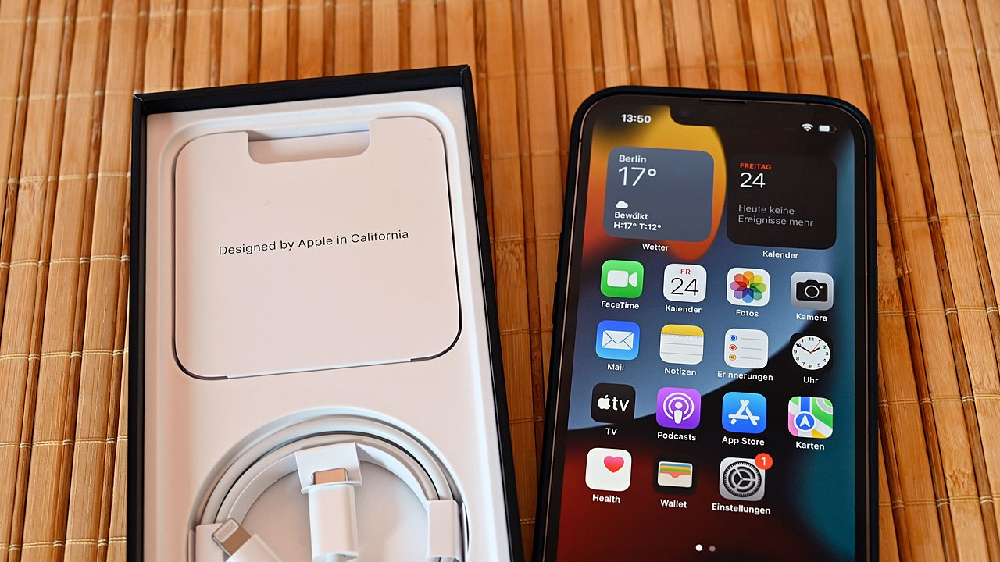
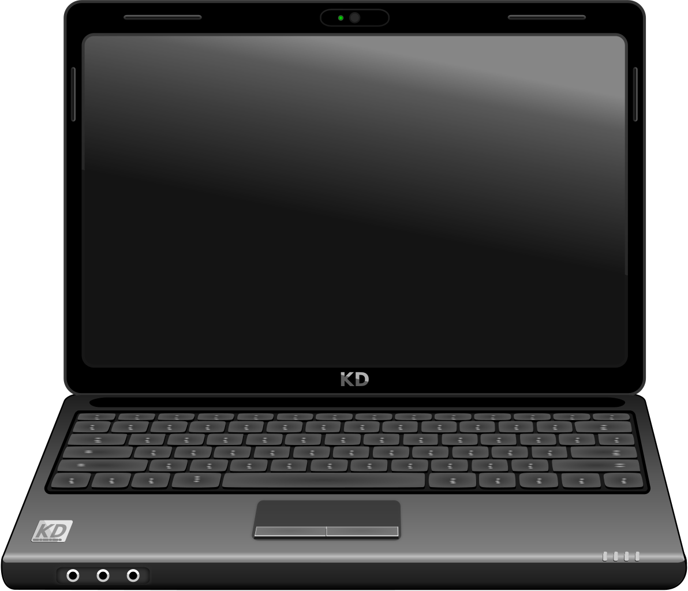
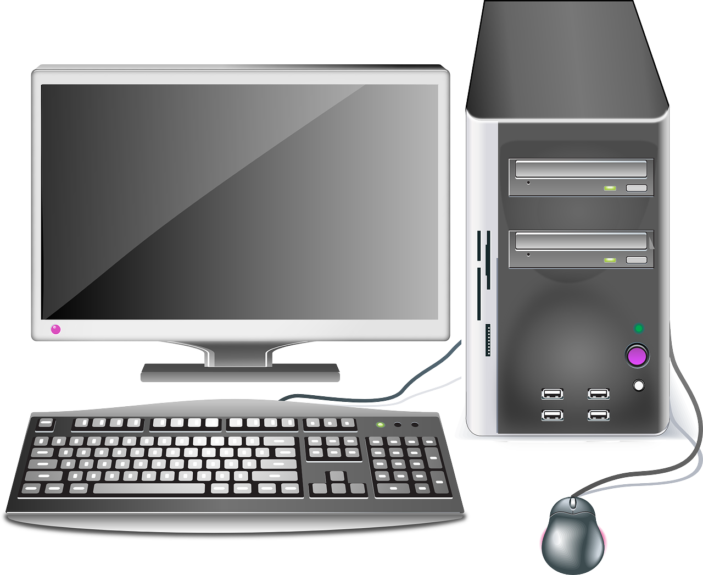
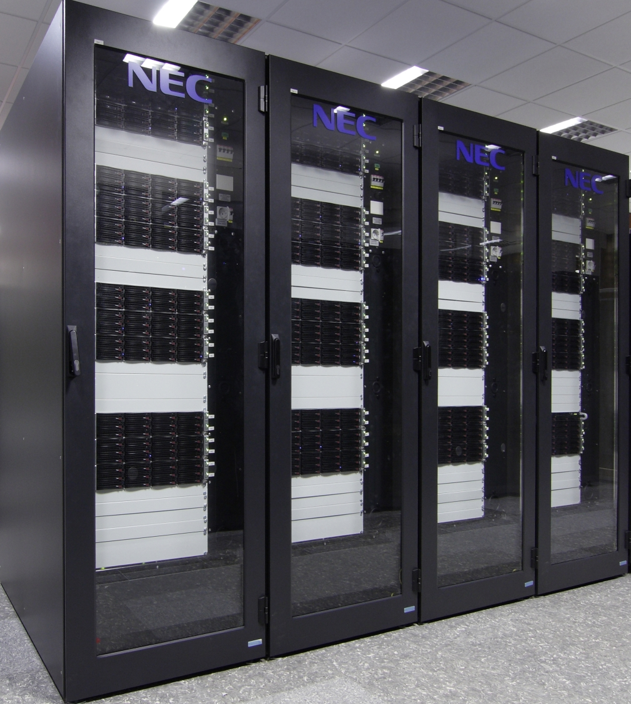
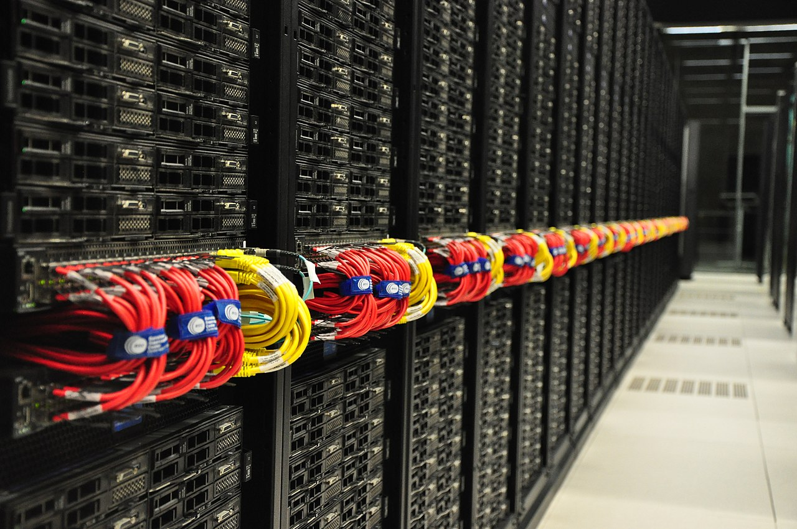

Classificació dels ordinadors¶
Segons la potència, la mida del maquinari i la seva funció, podem classificar els ordinadors en una de les seccions següents.
- Controladors programables
Són petits ordinadors de baixa potència, destinats a dispositius domèstics intel·ligents, elements d’un cotxe, etc. Aquests controladors són els que permeten als programes una rentadora, calendari digitalment un forn de microones, activen el fre ABS d’un cotxe, fan mesures de consum elèctric remot, validen una targeta de transport al bus, activeu una bulb mitjançant connexió WI -FI, controleu una màquina d’exposa, etc.
A la indústria, els controladors programables especialitzats s’utilitzen per moure màquines automàticament o per recopilar dades i controlar processos industrials. Aquests controladors s’anomenen plc i scada <https://es.wikipedia.org/wiki/scada> `__.
Com que els preus dels components electrònics són més barats, cada vegada més dispositius incorporen petits ordinadors que aporten intel·ligència. Aquests petits controladors afegits a objectes quotidians i connectats a Internet és el que s’anomena “Internet de les coses <https://es.wikipedia.org/wiki/internet_de_las_cosas>` `__ o IoT.
Un dels conductors d’ús domèstic i d’entreteniment és el més conegut és l’arduino uno <https://es.wikipedia.org/wiki/arduino_uno>`__, amb arquitectura de 8 bits i 32 kbytes de memòria del programa.

Arduino One Controller Plate.¶
- Portàtil
Una tecnologia vestida o vestida <https://es.wikipedia.org/wiki/tecnolog%C3%ADA_Vestible>`__ és un ordinador petit incorporat a la roba. Inclou rellotges intel·ligents o smartwatch, ulleres intel·ligents, etc.
Aquesta tecnologia es pot utilitzar per controlar la salut dels usuaris.

Apple Watch 6 Navy Blue Series.¶
Avia Husk, CC BY-SA 4.0 International, via Wikimedia Commons.- Ordinador de plaques úniques (SBC)
Els ordinadors simples de placa són ordinadors complets en una sola placa de circuit imprès reduït que inclou una CPU, RAM, perifèrics, connectors i altres components típics d'un ordinador.
Un dels SBC de baix nivell més baix és la placa PI de Raspberry. És un microordenament personal que executa el sistema operatiu de Linux i només necessita afegir un teclat, un ratolí i un monitor per tenir un PC operatiu amb ell.
- SmartTV
Són petits ordinadors dissenyats per afegir intel·ligència (intel·ligent) a una televisió tradicional. Permeten descodificar senyals de satèl·lit digital fins a afegir capacitats com connectar -se a Internet i veure serveis de streaming com Netflix, HBO o Amazon Prime.
Alguns dels més coneguts són "Google Chromecast <https://es.wikipedia.org/wiki/apple_tv>`__,
Molts televisors actuals (SmartTV) ja tenen ordinadors incorporats que permeten aquestes tasques, a més de connectar els fabricants en línia. Això ha provocat controvèrsies perquè aquests televisors poden registrar les converses que els envolten i enviar -les al fabricant.

Amazon Fire TV 4K.¶
Pàgina dev <https://commons.wikimedia.org/wiki/file:amazon_fire_tv_4k.jpg> __, `` cc by-sa 4.0 internacional <https://creativecommons.org/licenses/by-sa/4.0/deed.en> `` `` `` `` `` `` `` `` `` `` `` `` `` `` `` `` `` `` `` `` `` `` `` `` `- Consoles de vídeo
Les consoles de vídeo són ordinadors destinats a executar videojocs. Poden tenir una potència relativament alta.
El seu ús es redueix exclusivament al joc i la disponibilitat de molts d'aquests jocs es limita a una sola plataforma, de manera que molts usuaris de videojocs prefereixen utilitzar un ordinador personal (PC) de funcions altes. La diferència entre els dos tipus d’ordinadors rau en el preu. Per a la mateixa potència de procés, un PC pot costar el doble que un estat de consoles de jocs -t -t.

Sony PlayStation 4 del 2014.¶
Evan-amos <https://commons.wikimedia.org/wiki/file:ps4-console-wds4.jpg> __, domini públic, a través de Wikimedia Commons.- Ordinadors dedicats
Hi ha més tipus d’ordinadors dedicats a una sola funció de manera especialitzada. Són ordinadors més potents que controladors programables.
Exemples d’aquest tipus d’ordinadors són els servidors de dades nas que permeten compartir fitxers de dades en una xarxa d’ordinadors, fotocopietes, encaminadors, caixers automàtics, etc.
- Telèfon intel·ligent
Un smartphone <https://es.wikipedia.org/wiki/tel%C3%A9phone_inteligente> __ o smartphone és un dispositiu que combina les funcions d’un telèfon mòbil amb les d’un ordinador de butxaca.
Actualment són els ordinadors d’ús més comú per a la majoria de la gent.
El seu sistema operatiu sol ser Android (de Google) o iOS (de Apple).

Apple iPhone 13.¶
Simonwaldherr <https://commons.wikimedia.org/wiki/file:iphone_13_pro.jpg> __, cc by-sa 4.0 <https://creativecommons.org/licenses/by-sa/4.0/deed.en> `` `` `` `` `` `` `` `` `` `` `` `` `` `` `` ` `` `` `` `` `` `` `` `` `` `` `` `` ``- Taula
Una tauleta o tauleta és un ordinador petit basat en una pantalla tàctil que sol funcionar amb els mateixos sistemes operatius que els telèfons mòbils (Android i iOS).
En determinats casos, poden incloure perifèrics com un teclat o un ratolí, tot i que la majoria de vegades només es gestionen mitjançant la pantalla tàctil.
Hi ha telèfons intel·ligents amb una mida més gran de l’habitual (superior a 6 polzades de diagonal) s’anomenen tabonos o phablet.
- Ordinador de llibreta
Un portàtil és un ordinador personal (PC) capaç de realitzar totes les tasques d’un ordinador d’escriptori, però amb una mida petita i una bateria inclosa perquè es pugui moure fàcilment a qualsevol lloc.
Els ordinadors portàtils ** netbooks ** són ordinadors dissenyats per connectar -se a Internet i tenir menys capacitats que un ordinador portàtil habitual. Normalment porten un sistema operatiu de llum basat en Linux i tenen un preu reduït. Els models més coneguts són el ** Chromebook ** de Google.

Pixabay <https://commons.wikimedia.org/wiki/file:Black_laptop_computer_open_frontal.svg> __ cc0 1.0 dominis públics <https://creativecommons.org/publicdomain/zero/1.0/deed.en> `` `` `` `` `` `` `` `` `` `` `` `` `` `` `` `` `` `` `` `` `` `` `` `` `` `` `` ``¶
- Ordinador d'escriptori personal
Amb un ordinador o un ordinador personal, una microordesa d’escriptori s’anomena generalment, d’ús general, per ser utilitzat per una persona. Els ordinadors personals actuals van començar a vendre’s el 1981 per IBM, tot i que els ordinadors aviat van aparèixer amb un funcionament similar (clonic) fabricat per altres empreses.
El seu sistema operatiu sol ser Windows, MacOS o Linux.
Els ordinadors personals d’alt rendiment també s’anomenen “Estació de treball <https://es.wikipedia.org/wiki/estatry%C3%B3N_DE_TRABAJO>`__. Tenen molta més potència de càlcul i capacitat d’emmagatzematge que un ordinador personal habitual.

Imatge de OpenClipart-Vectors a pixabay <https://pixabay.com/es/vectors/computadora-scrrity-158675/> `` `` `` `` `` `` `` `` `` `` `` `` `` `` `` `` `` ` `` `` `'¶
- Mainframe
Un mainframe o una "unitat central <https://es.wikipedia.org/wiki/unitat_central>`__ És un ordinador utilitzat principalment per grans organitzacions per a aplicacions crítiques que requereixen ordinadors molt fiables i amb una gran capacitat d'emmagatzematge.
Aquests ordinadors s’utilitzen per dur a terme operacions bancàries, censos, servidors d’Internet, etc.
- Clúster d'ordinador
Un Cluster d’ordinadors és un gran ordinador compost per un conjunt d’ordinadors units per una xarxa d’alta velocitat i sincronitzada per un sistema operatiu, que sol ser linux, de manera que es comporten com a ordinador únic.
Actualment, aquest tipus d’ordinadors substitueix gradualment els fotogrames principals en les seves funcions.

Hynderath, cc by-sa 3.0, via wikimedia commons.¶
- Superordenor
Un supercomputador és un ordinador utilitzat per realitzar grans càlculs com predir el temps atmosfèric, la investigació del genoma, els nous medicaments, etc.
Al principi es van utilitzar els primers primers llocs dedicats al càlcul intensiu, però actualment es basen en la tecnologia de clústers d’ordinadors.
A Espanya, el supercomputador més famós és el Marenostrum, compost per un clúster de 48 896 processadors Intel Xeon.

Marenostrum 4 Supercomputador al Centre de Supercomputació de Barcelona.¶
Vcarceler <https://commons.wikimedia.org/wiki/file:bsc-marenostrum4-f.jpg> __, cc by-sa 4.0 <https://creativecommons.org/licenses/by/4.0/deed.en> `__, via commons Wikimedia.
{kind=link}
{kind=link}
{kind=link}
{kind=link}
{kind=link}
{kind=link}
{kind=link}
{kind=link}
{kind=link}
{kind=link}